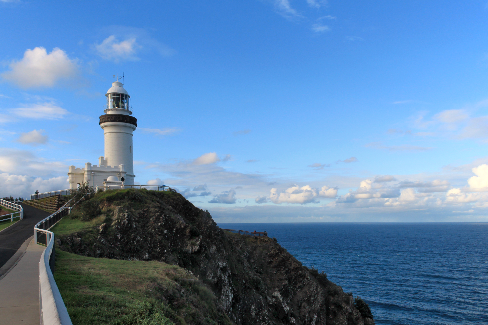
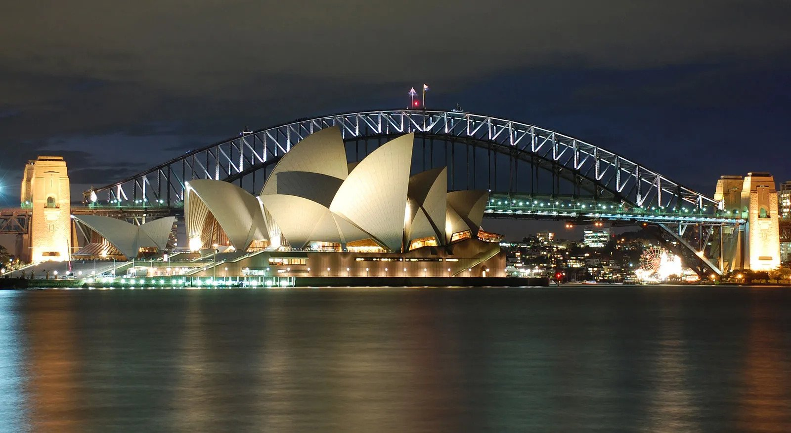

If you’ve never heard of the “Bondi bubble”, spend one day in this bustling, beautiful blue oceanside village and you’ll soon catch on. Even to locals, this slice of heaven is a real-life wonderland. Start your day watching the sunrise paint the ocean with a gorgeous glow before cooling off in an iconic ocean pool and filling up on a scrumptious brunch with a side of ocean views. Early birds and activity seekers will love the endless array of action – that starts before the sun’s up – while cruisers can chill out browsing boutiques or relax with a drink in hand. Keep an eye out and you may even see breaching whales and surfing dolphins across the one-kilometre (0.6-mile) stretch of glorious ocean. There really is nowhere quite like Bondi.
Byron Bay

Look back a few decades and Byron Bay was known for its alternative culture, easygoing surfers and off-the-grid hippies. Now, Byron may be a bit more refined, but it’s no less beautiful. You’ll still find incredible surf breaks and tranquil yoga retreats that give a nod to Byron’s hippie history. You’ll also find newcomers including award-winning restaurants, luxurious beach houses and craft breweries. From barefoot backpackers to Hollywood celebrities, Byron Bay has retained its status as a destination for everyone.
Visitors flock to Byron Bay to stroll its beaches and surf, to scuba dive and snorkel in the protected habitat of Cape Byron Marine Park (2002), for eco cruising and kayaking, and to visit nearby quaint villages.
Sydney Harbour

Sydney Harbour is an aquatic playground for Sydneysiders, with more than 240 kilometres (150 miles) of shoreline, punctuated by unspoiled beaches, picturesque gardens and pockets of natural bush. It is also home to some of Australia's big-name attractions, including the Sydney Opera House and Sydney Harbour Bridge.
The Sydney Opera House is located on Port Jackson (Sydney Harbour), New South Wales, Australia. Its unique use of a series of gleaming white sail-shaped shells as its roof structure makes it one of the most-photographed buildings in the world.
Places to go
Top places to visit in Sydney
A city that needs no introduction, Sydney doesn't disappoint on WOW factor. From its spectacular harbour, pristine coastline, vibrant culture, and picturesque surrounding rural and coastal landscape, there's no shortage of things to do and see.